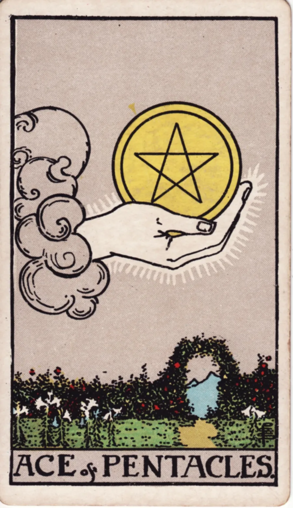

Ás de Ouros no tarô

- Carta
- Arcano Menor · Ouros
- Elemento
- Terra
- Palavras-chave
- Abundância
- Prosperidade
- Manifestação
- Saúde
Significado do Ás de Ouros
Uma nova oportunidade material ou financeira surge, prometendo estabilidade e prosperidade futura. Plante esta semente com cuidado, pois ela tem o potencial de crescer muito.
Ás de Ouros invertido
Oportunidades perdidas ou falta de planejamento financeiro podem gerar instabilidade material. Avalie suas prioridades e cuide melhor dos seus recursos atuais.
Ás de Ouros no amor
No amor, o Ás de Ouros fala de algo concreto e estável começando: uma relação que tem chão, ou o desejo de construir juntos. É amor que se mostra em atitudes.
Ás de Ouros no trabalho e no dinheiro
No trabalho, é uma das melhores cartas para começar: uma proposta, um emprego novo, uma oportunidade de ganho real. No dinheiro, uma entrada que pode virar base.
Ás de Ouros como conselho
Como conselho, o Ás de Ouros diz: plante agora a semente do que você quer colher.